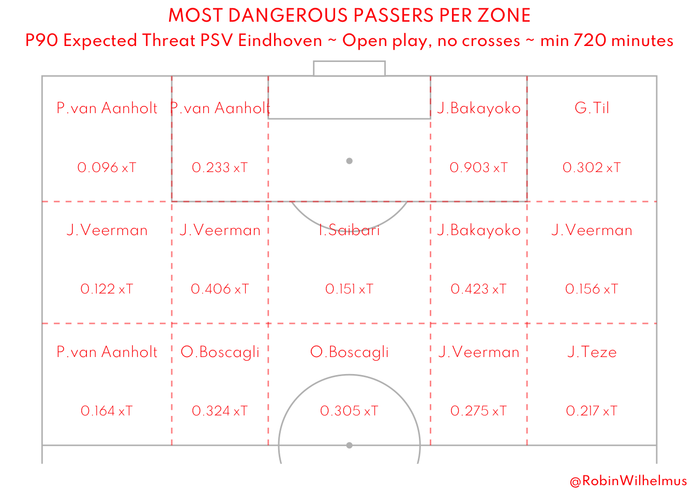

How insane is PSV?
A look at PSV’s Eredivisie data
Intro
PSV has won its first 16 games of the season, and not at all undeserved. How special is this achievement? And who stands out in this team? In this post I’m going to look at the underlying numbers of their so far perfect season and compare some stuff to previous seasons and Eredivisie records. It’s a lot of vizualizations I found interesting
Previous seasons
Points
Since the Eredivisie gives you three points for a win, the best team after 16 games was PSV 18/19. They only lost to Feyenoord in their first 16 games, giving them 45 points at this stage in the season. Suprisingly enough, they didn’t win the title, as they finished 2nd, three points behind Ajax after losing their spot at the top of the table after match day 29. PSV Finished that season with 83 points.
If we recalculate older seasons to the three points per win rule, Ajax 69/70 also got 45 points and they only lost to Feyenoord as well.
| Nr. | Club | Season | Pos | W | D | L | Pts | Gf | Ga | Gd |
|---|---|---|---|---|---|---|---|---|---|---|
| 1. | Ajax | 1971/72 | 1 | 30 | 3 | 1 | 93 | 104 | 20 | +84 |
| 2. | Ajax | 1972/73 | 1 | 30 | 0 | 4 | 90 | 102 | 18 | +84 |
| 3. | Ajax | 1997/98 | 1 | 29 | 2 | 3 | 89 | 112 | 22 | +90 |
| 4. | Ajax | 1994/95 | 1 | 27 | 7 | 0 | 88 | 101 | 30 | +71 |
| 4. | PSV | 2014/15 | 1 | 29 | 1 | 4 | 88 | 92 | 31 | +61 |
| 4. | Ajax | 2020/21 | 1 | 28 | 4 | 2 | 88 | 102 | 23 | +79 |
As you can see in the above table, only Ajax 97/98, PSV 14/15 and Ajax 20/21 finished with more than 87 points since the rule chance. Personally I’m not a fan of recalculating point totals with the new rule, but included them in the table to be complete. Ajax 71/71 was insane on many levels and Ajax 94/95 finished the season without losing a game, which is still unmatched. PSV 14/15 won the league with 17 points more than number 2 Ajax.
PSV is on track to get 102 points, which would of course be a new record. The chance that this will happen is small, but a new record should be possible.
Goals
Not only in points, but also in goals they are unstoppable. They scored 56 goals already. The three most scoring teams after 16 matches (again, since 95/96) are PSV and Ajax in 18/19 and Ajax in 20/21, all three with 57 goals. The 18/19 season was something else for those two teams, as you can see.
If we look at all Eredivisie seasons we can also include Feyenoord 60/61 (62 goals), PSV 87/88 (60), Ajax 66/67 (58) and Feyenoord 74/75 (58).
| Nr. | Club | Season | Pos | W | D | L | Pts | Gf | Ga | Gd |
|---|---|---|---|---|---|---|---|---|---|---|
| 1. | Ajax | 1966/67 | 1 | 26 | 4 | 4 | 82 | 122 | 34 | +88 |
| 2. | Ajax | 1985/86 | 2 | 25 | 2 | 7 | 77 | 120 | 35 | +85 |
| 3. | Ajax | 2018/19 | 1 | 28 | 2 | 4 | 86 | 119 | 32 | +87 |
| 4. | Ajax | 1981/82 | 1 | 26 | 4 | 4 | 82 | 117 | 42 | +75 |
| 4. | PSV | 1987/88 | 1 | 27 | 5 | 2 | 86 | 117 | 28 | +89 |
PSV is on track to score 119 goals, which would make them on par with Ajax 18/19 in 3rd spot.
None of the teams with the most points are the teams with the most goals scored in one season. Will PSV get in both rankings at the end of the season?
xG Timeline
As you can see, PSV mainly improved their attacking output which results in an NPxG difference of 2.29 per game. This is (of course) the best xG difference of the league. We will look at the other teams later.
PSV 22/23 came also close to this at the start of their season, but they played FC Volendam, Go Ahead Eagles, FC Emmen and Excelsior as their first four games (teams they absolutely crushed, by the way). This season they played every team except Excelsior.
This season
Team data
Winning all your games is difficult, especially when there normally is a game where you produce a lot of xG without scoring (more than your opponent). Willem II against PSV 21/22 comes to mind… And even this season, the game against Vitesse could easily been different than a win.
Total xG
If we look at their NPxG, we see that they score close to expectations. So they are just that good in attack. They are not lucky with finishing their chances over the long run.

xG Difference
PSV xG difference is (as I mentioned before) the best of the league. Only Feyenoord comes a little close, but PSV’s attacking numbers are in a world of their own.
Scoring goals
The chance at scoring 56 goals from their xG is around 5%. That’s a small number but we should look at the bigger picture. Scoring 56 goals or more has a chance of around 23%. Scoring between 50 and 60 goals: 55%
Conceding goals
According to their xG against they should have conceded more goals than the six they did. As you can see, six goals is very unlikely. Even conceding less than ten goals only has a chance of less than 5%. They should have conceded somewhere around 14 or 15 goals. Are they lucky in that regard, or is there something else?
We will take a look at this later when we investigate some Benitez data.
xG Per game
Above you can see the xG PSV created (top row) and conceded (bottom) for every match this season. The games where they conceded the most xG were the games against the two teams that were in a crisis (Ajax) or would soon be (Vitesse). In the game versus Vitesse they had a penalty which means their NPxG was lower than Vitesse’s. The other games they won with more NPxG than their opponent. So like I said early, they deserve the spot in the table without a doubt.
xThreat
The most dominant player in attacking passes is clearly Veerman, who really dominates the attacking midfield with his passes. It’s fun to see that on the left side Van Aanholt creates a lot as a back, but on the right side, the most threat is coming from attackers and midfielders. This could be due to some injuries or rotation, but even the per 90 names look almost the same.

The Players
Honestly, I could dive into the data for so many players of this team. To avoid the risk of overkill, I only chose a few to review. If you want to see some data from other players, feel free to contact me on Twitter.
Benitez
Let’s begin in the back: Benitez. He only conceded 6 goals from 14.74 xG. Most of you know, that this stat doesn’t say much about Benitez’ qualities. If the opposite players shot all their chances out of the stadium, the xG would still be the same. Lukily we have PsxG/xGOT to qualify the shots instead of the chances.
Opta gives PSV’s opposition a PSxG of 9.6. So yeah, they do finish their chances sub par. But even then, Benitez is preventing 3.6 goals. That’s a lot from 9.6 PSxG. In other words: he’s preventing 37.5% of PSV’s goals against. In absolute numbers, only Barkas and Olij match him with 3.6 and 3.5 goals prevented, but that’s from 26.6 and 25.5 PSxG. So yeah, PSV is maybe lucky with the finishing abilities of the teams they faced, but on top of that, Benitez is having a great season.
Luuk de Jong
PSV is finishing their 51.14 xG with 46.6 PSxG, so not that deadly. Their joint top goalscorer is Luuk de Jong with “only” eleven goals of which four were penalties. Those are not the numbers you would expect from the striker of a team that scored 56 goals already. Pavlidis and Gimenez are on 18 and their teams “only” scored 35 en 48 goals. But that’s probably the strength of this PSV, a lot of players know how to score a goal. And of course De Jong brings more than just goals to this team (he has 7 assists), but his lack of goals is something that stands out for me.
Joey Veerman
By far their most dangerous passer of the team is Veermanas we saw earlier. With his open play passes he created an xThreat of 3.64. Only Sugaware does this better with 4.38 in about the same minutes.
Besides that he assisted 72 shots, by far the most of the whole league.

Just to show that those passes were not only to a player that loves to shoot from far, here is the top 10 xA and their assists this season.
As you can see, he creates a lot. You can also see another PSV player: Bakayoko. A player a lot of people were happy to let him go to PSG for peanuts, but he proves them wrong with a great season.
As I said, I could highlight almost every player. From a lot of players (e.g. Lang, Schouten, Lozano) we/I knew their quality, but Saibari really surprises me this season. His numbers are great and he is a joy to watch. He seems to get fitter and better every week I watch him.
Well, how insane is PSV?
Very. They dominate most stats and they are playing great attacking football, with a squad that is way bigger and better than just te first eleven. After a difficult season it is admirable what Peter Bosz achieved in a short time. They were a team that was depending on Xavi’s brilliant actions, but are now a team where everyone knows their role and knows how to execute it.